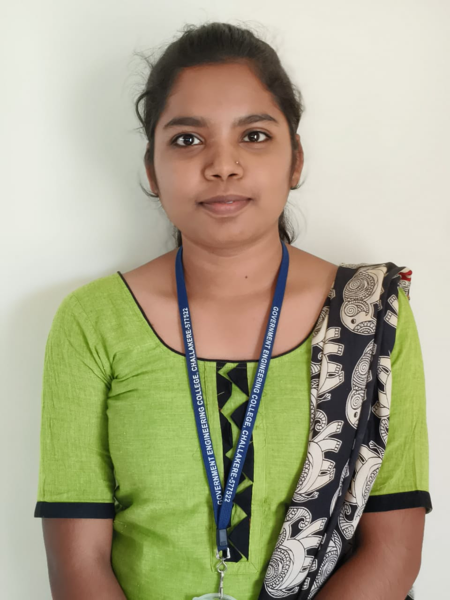

Github
Email
LinkedIn
Phone: +91-8618803277
Location: Challakere, Karnataka, India

To obtain a challenging position as a Computer Science graduate where I can apply my programming skills and continuously learn new technologies.My aim is to become an Java developer in an IT company where i can apply my knowledge and have more knowledge in the particular domain
| Education | College | Year | Precentage |
|---|---|---|---|
| BE in Computer Science and Engineering | Government Engineering College,Challakere | 2022-2026 | 89% |
| PU-pre university | SRS PU college,Challakere | 2020-2022 | 89% |
| Secondary School Education | Adarsha vidyalaya, Challakere | 2015-2020 | 95.04% |
Name: Keerthana N
Date of Birth: 30/03/2004
Languages Known: English, Kannada, Telugu
Native:Challakere